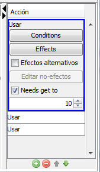

Usando el botón de "Editar acciones" aparece un nuevo panel a la
derecha, justo debajo de la tabla. El pane el similar al que se muestra
a continuación:

Otro click en el botón oculta el panel. El panel también se pueden
mostrar y ocultar usando las fechas hacia la derecha e izquierda que se
encuentran en el borde del mismo.
Para esto se deben utilizar los botones estándar de las listas, ubicados debajo de la misma. Para más información consultar la ayuda de las listas.
Como se ve en la imagen anterior, cuando una acción esta seleccionada podemos modificar todas sus propiedades desde la misma tabla. El significado de cada una de las propiedades de una acción se puede consultar en la ayuda de las acciones